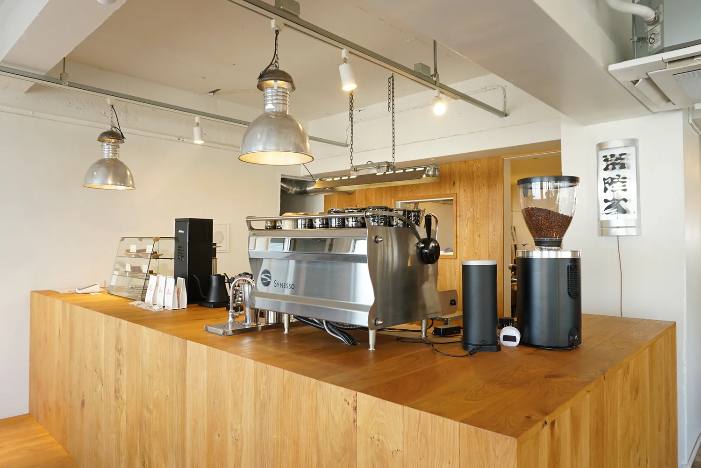

お気に入り
僕の好きな場所について
僕はカフェに行くことが多いのですが、その中でも皆さんが行きやすいカフェを紹介します
ここのアサイーボウルがとにかくおいしくて店内もチルできる内装だったのでぜひおすすめです。
HITACHINO COFFEE ROASTERY

場所
〒310-0021
茨城県水戸市南町1-2-32 M-Workビル 1F

僕はカフェに行くことが多いのですが、その中でも皆さんが行きやすいカフェを紹介します
ここのアサイーボウルがとにかくおいしくて店内もチルできる内装だったのでぜひおすすめです。

〒310-0021
茨城県水戸市南町1-2-32 M-Workビル 1F